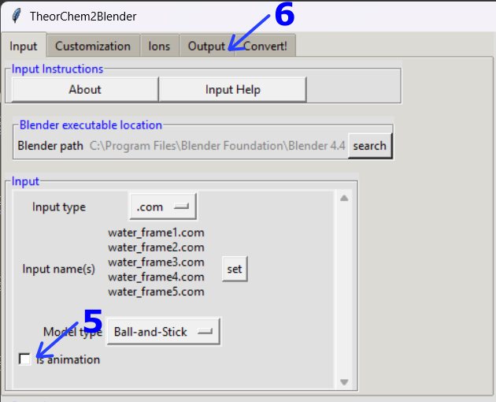

6. TheorChem2Blender - Animating .com input¶
Overview¶
TheorChem2Blender is a program that has 5 tabs. Which tabs to modify depend on the type of 3D file the user wants to create. For the simplest use of the program, you only need to specify the input, and convert it as output. The default output format is glb. Below is a continuation on how to use TheorChem2Blender, focused animating .com input. Refer to (3) basic use for information about how to choose com input files to convert, (4) highlighting bonds for how to highlight atoms and bonds, and (5) specifying ions for ionic compounds.
Input tab¶
Leave .com as the input file
Click on set to select the input name
Go to inpuut_examples/com_files/animations/water
Select all the water.com frames available
{kind=link}
Notice there is more than one name in the Input name(s) space 5. Click on Is animation 6. Click on the Output tab
{kind=link}
Output tab¶
Select fbx as the output format
{kind=link}
Click on the Convert! tab
Convert! tab¶
Convert the input
Your file will appear by default in the output/ folder.
Note
🎥 To see a video recording of this walkthrough, visit the following link: Watch on YouTube
Previous: (5) specifying ions Next: (7) animating xyz files